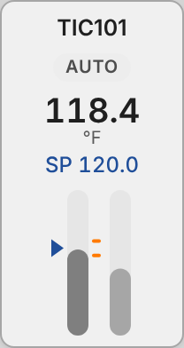

<figure class="card" id="Templates_Loops_Loop_B4_Column"><div class="view" style="width:170px;height:320px"><div class="stage" style="width:104px;height:196px;transform:scale(1.6327)"><div class="hit" style="position:absolute;inset:0;pointer-events:none" title="click: open dynamic window"></div></div></div><figcaption><code>Templates/Loops/Loop_B4_Column</code><br><b class="ok">T_PID</b> &middot; dynamic window <code>dw_Loop</code><br>click symbol: open dynamic window<br><i>render of the real view</i></figcaption></figure>